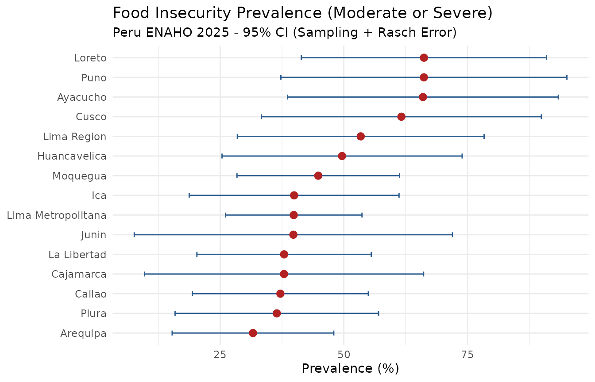
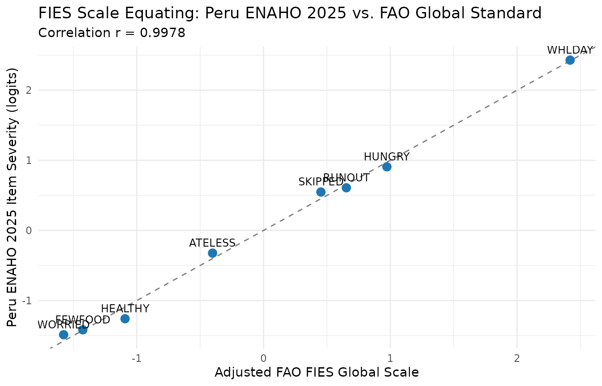

Overview
FIESperu streamlines the estimation of Moderate
or Severe and Severe food insecurity
prevalence in Peru from the Food Insecurity Module (Módulo
de Inseguridad Alimentaria, Module 2082) of the National
Household Survey (ENAHO, conducted by
INEI) using the Food Insecurity Experience Scale
(FIES, Sustainable Development Goal Indicator
2.1.2).
Beyond official prevalence estimation, FIESperu also
provides a reproducible, real-world data resource for teaching,
training, and applied research in food insecurity measurement,
FIES analysis, Rasch modeling, psychometric validation, and complex
survey methodology.
Specifically, FIESperu implements the official INEI /
FAO methodology:
-
Automated microdata download & caching from
INEI’s
srienahorepository (annual surveys from 2025 onwards). -
Modular household harmonization linking Module 2082
(
enaho01-<year>-130, FIES) and Module 34 (sumaria-<year>-12g) with optional housing/NBI ("housing"), household demographic composition ("demographics"), education/disability/insurance ("education_health"), and social protection programs ("programs"). -
Weighted Rasch calibration & global equating
against the FAO FIES global reference scale
(
fies.global.st), including 32-bit Stata float population weight matching (as_stata_float()). -
Combined variance estimation combining
Taylor-linearized complex-survey sampling error (
se_s) and Rasch latent measurement error (se_m).
1. Exploring Available ENAHO Modules and the 8 FIES Questions
Use fies_modules() to inspect the modular data blocks
supported by the package, and fies_items() to view the
exact wording, variable names, severity domains, and FAO global standard
parameters of all eight FIES questions in ENAHO Chapter 130:
fies_modules()
#> # A tibble: 7 × 6
#> block inei_module module_name_es dta_pattern unit_raw available_from
#> <chr> <chr> <chr> <chr> <chr> <int>
#> 1 core 2082 Inseguridad A… enaho01-<y… Househo… 2025
#> 2 core 34 Sumarias (Var… sumaria-<y… Househo… 2025
#> 3 housing 01 Caracteristic… enaho01-<y… Househo… 2025
#> 4 demographics 02 Caracteristic… enaho01-<y… Member … 2025
#> 5 education_heal… 03 Educacion enaho01a-<… Member … 2025
#> 6 education_heal… 04 Salud y Disca… enaho01a-<… Member … 2025
#> 7 programs 37 Programas Soc… enaho01-<y… Househo… 2025
knitr::kable(
fies_items()[, c("item_num", "enaho_var", "harmonized_var", "item_code", "global_st", "question_en")],
digits = 4
)| item_num | enaho_var | harmonized_var | item_code | global_st | question_en |
|---|---|---|---|---|---|
| 1 | p130_1 | fies_worried | WORRIED | -1.2231 | During the previous month, was there a time when you or another household member were worried you would not have enough food to eat because of a lack of money or other resources? |
| 2 | p130_2 | fies_healthy | HEALTHY | -0.8471 | During the previous month, was there a time when you or another household member were unable to eat healthy and nutritious food because of a lack of money or other resources? |
| 3 | p130_3 | fies_fewfood | FEWFOOD | -1.1057 | During the previous month, was there a time when you or another household member ate only a few kinds of foods because of a lack of money or other resources? |
| 4 | p130_4 | fies_skipped | SKIPPED | 0.3510 | During the previous month, was there a time when you or another household member had to skip a meal because there was not enough money or other resources to get food? |
| 5 | p130_5 | fies_ateless | ATELESS | -0.3118 | During the previous month, was there a time when you or another household member ate less than you thought you should because of a lack of money or other resources? |
| 6 | p130_6 | fies_runout | RUNOUT | 0.5065 | During the previous month, was there a time when your household ran out of food because of a lack of money or other resources? |
| 7 | p130_7 | fies_hungry | HUNGRY | 0.7546 | During the previous month, was there a time when you or another household member were hungry but did not eat because there was not enough money or other resources for food? |
| 8 | p130_8 | fies_whlday | WHLDAY | 1.8755 | During the previous month, was there a time when you or another household member went without eating for a whole day because of a lack of money or other resources? |
2. Preparing Household Microdata and Fitting the Rasch Model
With an internet connection, running
prepare_fies(years = 2025, include = "all") automatically
downloads and caches all required ENAHO 2025 Stata files on first use
and returns a clean household-level tibble:
# Real ENAHO 2025 workflow (downloads once and reuses local cache):
df_2025 <- prepare_fies(
years = 2025,
include = c("core", "demographics", "education_health", "programs")
)For offline illustration and Rasch model training, we use the bundled
synthetic stratified dataset fies_sample:
df_demo <- prepare_fies(sample_data = fies_sample, quiet = TRUE)
df_demo[, c("year", "area", "region_inei", "poverty", "fies_rs", "pr_mod_sev", "pr_sev")]
#> # A tibble: 400 × 7
#> year area region_inei poverty fies_rs pr_mod_sev pr_sev
#> <int> <fct> <chr> <fct> <int> <dbl> <dbl>
#> 1 2025 Rural Cusco Non-Poor 1 0.0335 0.00000723
#> 2 2025 Urban Ica Poor 3 0.349 0.0000872
#> 3 2025 Urban Ica Non-Poor 1 0.0335 0.00000723
#> 4 2025 Rural Ayacucho Poor 7 0.993 0.539
#> 5 2025 Urban Piura Non-Poor 0 0.0271 0.0000704
#> 6 2025 Urban Callao Non-Poor 2 0.115 0.00000784
#> 7 2025 Rural Cajamarca Poor 1 0.0335 0.00000723
#> 8 2025 Rural Cusco Non-Poor 5 0.892 0.0194
#> 9 2025 Urban Lima Metropolitana Non-Poor 6 0.975 0.151
#> 10 2025 Rural Huancavelica Non-Poor 2 0.115 0.00000784
#> # ℹ 390 more rowsBecause prepare_fies() returns a household-level
tibble containing conglome,
estrato, wt_hh, wt_pop, and
pr_mod_sev, you can also pass it directly to
survey::svydesign() and survey::svyglm() for
multivariable regression analyses.
3. Psychometric Validation (validate_rasch)
Inspect item severities, infit/outfit
statistics, flat Rasch reliability, and correlation against the FAO
global standard:
val <- validate_rasch(df_demo)
val
#> == FIESperu Psychometric Rasch Validation ==
#>
#> -- Scale Summary --
#> # A tibble: 1 × 13
#> year n_total n_complete n_partial_na n_all_na reliab_fl reliab cor_global
#> * <int> <int> <int> <int> <int> <dbl> <dbl> <dbl>
#> 1 2025 400 400 0 0 0.732 0.686 0.998
#> # ℹ 5 more variables: sd_b <dbl>, thresh_mod_sev <dbl>, thresh_sev <dbl>,
#> # max_infit <dbl>, eigenvalue_1 <dbl>
#>
#> -- Item Severity & Fit Statistics --
#> # A tibble: 8 × 11
#> year item_num enaho_var item_code severity_b se_b infit outfit global_st
#> * <int> <int> <chr> <chr> <dbl> <dbl> <dbl> <dbl> <dbl>
#> 1 2025 1 p130_1 WORRIED -1.49 0.133 0.883 0.789 -1.22
#> 2 2025 2 p130_2 HEALTHY -1.26 0.130 0.985 0.915 -0.847
#> 3 2025 3 p130_3 FEWFOOD -1.42 0.132 1.07 1.07 -1.11
#> 4 2025 4 p130_4 SKIPPED 0.548 0.138 1.02 1.06 0.351
#> 5 2025 5 p130_5 ATELESS -0.324 0.127 0.935 0.844 -0.312
#> 6 2025 6 p130_6 RUNOUT 0.608 0.139 1.09 1.17 0.507
#> 7 2025 7 p130_7 HUNGRY 0.907 0.146 1.10 1.05 0.755
#> 8 2025 8 p130_8 WHLDAY 2.43 0.214 0.949 0.964 1.88
#> # ℹ 2 more variables: adj_global_st <dbl>, diff_from_global <dbl>4. Estimating Prevalences and Margins of Error
(estimate_fies)
Compute national estimates, custom subgroup breakdowns (including
Cartesian interactions), or the full official INEI geographical
breakdown (by = "official", which separates Lima
Metropolitana from Lima Region):
# National prevalence
estimate_fies(df_demo)
#> # A tibble: 2 × 13
#> year group category indicator estimate lower upper moe se_total se_s se_m
#> <int> <chr> <chr> <chr> <dbl> <dbl> <dbl> <dbl> <dbl> <dbl> <dbl>
#> 1 2025 Nati… National Moderate… 44.9 39.6 50.3 5.35 2.73 2.13 1.71
#> 2 2025 Nati… National Severe 5.72 3.15 8.28 2.57 1.31 0.980 0.868
#> # ℹ 2 more variables: cv <dbl>, n_unweighted <int>
# Disaggregation by urban/rural area and monetary poverty (with interaction)
estimate_fies(
df_demo,
by = c("area", "poverty"),
combine_by = TRUE,
indicator = "mod_sev"
)
#> # A tibble: 9 × 13
#> year group category indicator estimate lower upper moe se_total se_s se_m
#> <int> <chr> <chr> <chr> <dbl> <dbl> <dbl> <dbl> <dbl> <dbl> <dbl>
#> 1 2025 Nati… National Moderate… 44.9 39.6 50.3 5.35 2.73 2.13 1.71
#> 2 2025 area Urban Moderate… 38.8 32.4 45.3 6.42 3.28 2.65 1.93
#> 3 2025 area Rural Moderate… 55.9 46.3 65.6 9.68 4.94 3.54 3.45
#> 4 2025 pove… Poor Moderate… 49.3 38.4 60.2 10.9 5.55 4.49 3.26
#> 5 2025 pove… Non-Poor Moderate… 43.4 37.2 49.7 6.24 3.18 2.47 2.01
#> 6 2025 area… Rural x… Moderate… 53.5 41.8 65.1 11.6 5.94 4.07 4.33
#> 7 2025 area… Rural x… Moderate… 60.9 44.6 77.2 16.3 8.33 6.03 5.75
#> 8 2025 area… Urban x… Moderate… 38.7 31.3 46.1 7.41 3.78 3.04 2.24
#> 9 2025 area… Urban x… Moderate… 39.5 25.5 53.5 14.0 7.15 6.04 3.83
#> # ℹ 2 more variables: cv <dbl>, n_unweighted <int>5. Visualizing Results (plot_fies)
est_reg <- estimate_fies(df_demo, by = "region_inei", indicator = "mod_sev")
plot_fies(est_reg, type = "prevalence")
#> `height` was translated to `width`.
plot_fies(val, type = "equating")